Hierarchical Successive Removal
Jags code for chapter 10.2
hierarchical-successive-removal.Rmd
library(hbm4ecology)
library(rjags)
library(posterior)
library(tidyverse)
library(bayesplot)
library(GGally)
library(ggExtra)The model rely on successive discrete (Binomial) distribution which
the size parameter can get very low. This renders Normal approximation
unreliable. Using Stan with Hamiltonian Monte Carlo would
require to marginalize over the successive Binomial distribution. This
requires some burdensome calculus. Hence we will use jags
with a standard MCMC.
Data and motivation
We turn to the successive removal Salmon data from the Nivelle, a 40-km river flowing from the Spanish Pyren'{e}es to the bay of Saint Jean de Luz. Details about the fishing procedure can be found in Chapter 4.2 of Parent and Prévost (2013) (page 83). We work with a complete dataset involving 3 years (2003-2005) with 11 sites located from the Nivelle River mouth to impassable upstream dams on the main stream and one of its tributaries. For each of the 33 experiments the number of fish caught were recorded for the first (\(C^{1}\)), second (\(C^{2})\) and eventually third pass \((C^{3})\) of the electrofishing experiment. In addition, we provide the area \(S\) in \(m^{2}\) that was fished each time.
Electrofishing of 0+ A. salmon juveniles
data("SucRemNivelle")
tibble(Site = seq(1,33)) %>%
bind_cols(bind_rows(SucRemNivelle[2:5])) %>%
knitr::kable(caption = "Three passes during successive removal electrofishing
on the Nivelle River (11 sites, years 2003-2004; NA = Not Available")| Site | C1 | C2 | C3 | S |
|---|---|---|---|---|
| 1 | 23 | 14 | 3 | 608 |
| 2 | 35 | 7 | NA | 294 |
| 3 | 38 | 17 | NA | 565 |
| 4 | 41 | 28 | 15 | 564 |
| 5 | 17 | 8 | NA | 229 |
| 6 | 24 | 11 | NA | 200 |
| 7 | 63 | 21 | NA | 693 |
| 8 | 101 | 25 | NA | 571 |
| 9 | 78 | 17 | NA | 950 |
| 10 | 21 | 9 | NA | 430 |
| 11 | 51 | 16 | NA | 636 |
| 12 | 14 | 5 | 2 | 375 |
| 13 | 19 | 1 | NA | 441 |
| 14 | 14 | 7 | 2 | 590 |
| 15 | 37 | 4 | NA | 665 |
| 16 | 22 | 15 | 2 | 228 |
| 17 | 27 | 5 | NA | 236 |
| 18 | 53 | 8 | 4 | 599 |
| 19 | 32 | 4 | NA | 547 |
| 20 | 35 | 2 | NA | 870 |
| 21 | 37 | 7 | NA | 302 |
| 22 | 26 | 8 | NA | 611 |
| 23 | 24 | 16 | 4 | 413 |
| 24 | 36 | 12 | NA | 473 |
| 25 | 27 | 26 | 5 | 591 |
| 26 | 142 | 81 | NA | 1095 |
| 27 | 55 | 5 | NA | 254 |
| 28 | 22 | 2 | NA | 288 |
| 29 | 73 | 10 | NA | 667 |
| 30 | 104 | 28 | NA | 606 |
| 31 | 190 | 43 | NA | 712 |
| 32 | 16 | 2 | NA | 341 |
| 33 | 17 | 4 | NA | 632 |
Model with independence between sites
The sampling distribution of the catch data are for each site \(i\):
- \(C^1_i \sim Binomial(\nu_i, \pi_i)\)
- \(C^2_i \sim Binomial(\nu_i - C^1_i, \pi_i)\)
- \(C^3_i \sim Binomial(\nu_i - (C^1_i+C^2_i), \pi_i)\)
Where we assume a Beta distribution for \(\pi_i\):
- \(\pi_i \sim beta(a,b)\), where we fix \(a=b=1\) for uniform prior.
We consider that the population size \(\nu_i\) depends on the expected fish density \(\delta_i\) as the area \(S_i\) of each sampling site is recorded. And we assume the fish to be randomly distributed in space within an infinitely large surface from which the site with finite surface \(S\) is randomly picked. We further assign a prior distribution to the fish density \(\delta_i\), via a Gamma distribution.
- \(\nu_i \sim Poisson(\delta_iS_i)\)
- \(\delta_i \sim Gamma(c,d)\), with \(c=d=1\).

Directed Acyclic Graph for a site with the independent model
Jags implementation and diagnostic for the independtent model
ind_model_str <- "model
{
for (i in 1:I)
{
# Prior
# -----
# Prior on capture efficiency
pi[i] ~ dbeta(1, 1)
# Prior on fish density
delta[i] ~ dgamma(1, 1)
# Number of fish on each site i (surface S[i] in the data set)
mu_nu[i] <- S[i] * delta[i]
nu[i] ~ dpois(mu_nu[i]) T(,500)
# Likelihood
# ----------
C1[i] ~ dbin(pi[i], nu[i])
nur1[i] <- nu[i] - C1[i]
C2[i] ~ dbin(pi[i], nur1[i])
nur2[i] <- nur1[i] - C2[i]
C3[i] ~ dbin(pi[i], nur2[i])
}
}"
set.seed(123)
ind_model <- jags.model(file = textConnection(ind_model_str),
data = SucRemNivelle,
# inits = replicate(3, ind_init, simplify = FALSE),
n.chains = 3)
#> Warning in jags.model(file = textConnection(ind_model_str), data =
#> SucRemNivelle, : Unused variable "AI" in data
#> Warning in jags.model(file = textConnection(ind_model_str), data =
#> SucRemNivelle, : Unused variable "I_pred" in data
#> Warning in jags.model(file = textConnection(ind_model_str), data =
#> SucRemNivelle, : Unused variable "AI_pred" in data
#> Compiling model graph
#> Resolving undeclared variables
#> Allocating nodes
#> Graph information:
#> Observed stochastic nodes: 74
#> Unobserved stochastic nodes: 124
#> Total graph size: 333
#>
#> Initializing model
# Inferences
update(ind_model, n.iter = 10000)
ind_posterior_sample <- coda.samples(ind_model,
variable.names = c("pi", "delta", "nu"),
n.iter = 10000,
thin = 10)
diagnostic <- summarise_draws(as_draws_df(ind_posterior_sample),
default_convergence_measures())
ggplot(diagnostic, aes(x = rhat)) +
geom_histogram() +
theme_classic(base_size = 15)
#> `stat_bin()` using `bins = 30`. Pick better value with `binwidth`.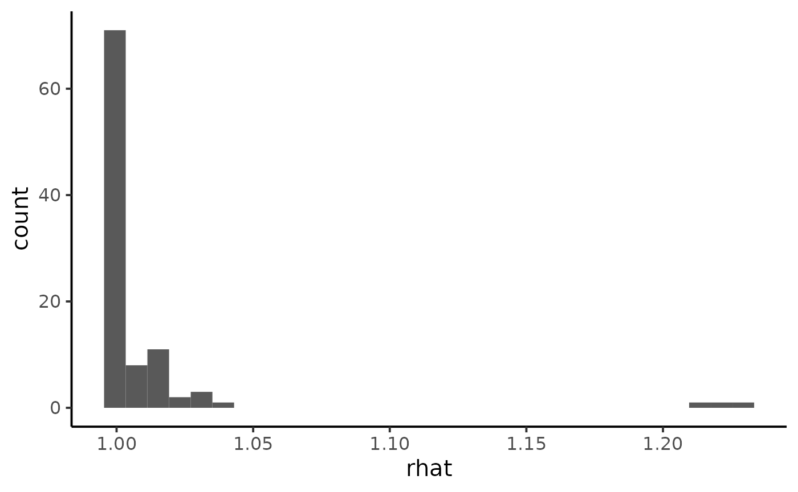
ggplot(diagnostic, aes(x = ess_bulk)) +
geom_histogram() +
theme_classic(base_size = 15)
#> `stat_bin()` using `bins = 30`. Pick better value with `binwidth`.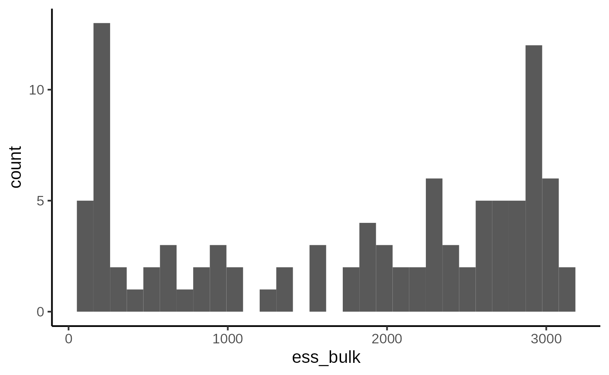
We notice some convergence issues on sites with insufficient information (e.g. sites number 5, 10 or 26).
mcmc_trace(ind_posterior_sample, pars = c("delta[5]", "pi[5]", "delta[10]", "pi[10]"))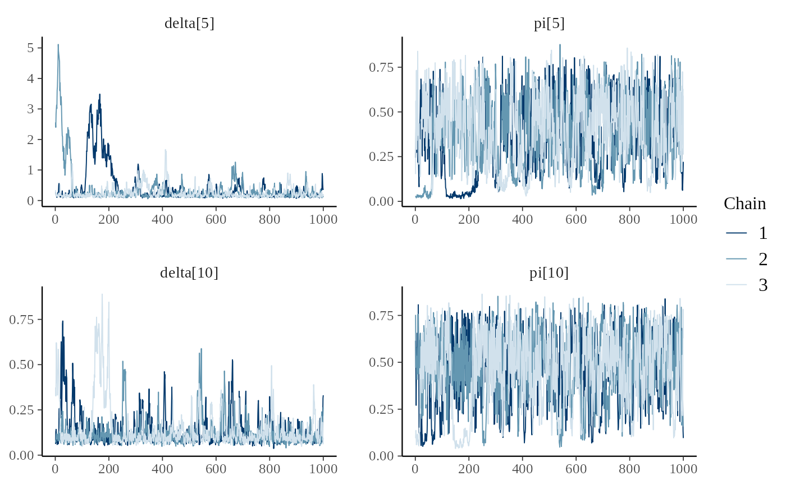
dfw_ind <- extract_wider(ind_posterior_sample)Hierarchical modeling
We add a hierarchical additional layer that this the experiments together. We do so by adding prior distribution to \(a\), \(b\), \(c\) and \(d\). For the parameters \((a, b)\) we use a simple transformation by considering:
- \(\mu_{a,b} = \frac{a}{a+b}\) with \(\mu_{a,b} \sim Beta(1.5,1.5)\), which is the mean of the Beta distribution.
- \(u_{a,b} = a+b\) with \(\log(u_{a,b}) \sim Uniform(0,10)\) can be interpreted as a prior sample size that scales the variance of the Beta prior distribution.
We follow the same line of reasoning, a change of variable for parameters \(c\) and \(d\) with mean \(\mu_{\delta} = \frac{c}{d}\) and standard deviation \(\sigma_{\delta} = \frac{\sqrt{c}}{d}\). Prior knowledge about juvenile salmon density suggests and informative prior for \(\mu_{\delta}\) and a diffuse prior for \(\sigma_{\delta}\):
- \(\mu_{\delta} \sim Gamma(1,1)\)
- \(\sigma_{\delta} \sim Gamma(1, 10^{-3})\).

Directed Acyclic Graph of the hierarchical model for successive removals.
Jags implementation and diagnostic for the hierarchical model
hier_model_str <- "model
{
# Priors
# ------
# Hyperprior for the trapping efficiency
mu_p ~ dbeta(1.5 ,1.5)
log_u_p ~ dunif(0,10)
u_p <- exp(log_u_p)
a <- mu_p * u_p
b <- (1-mu_p) * u_p
# Compute standard deviation of p
var_p <- mu_p*(1-mu_p)*(1/(u_p+1))
sd_p <- sqrt(var_p)
# Hyperpriror for the density
mu_d ~ dgamma(1,1)
sd_d ~ dgamma(1,0.001)
# Parameterization of the Gamma distribution
c <- pow(mu_d,2) / pow(sd_d,2)
d <- mu_d / pow(sd_d,2)
for (i in 1:I)
{
# Prior on capture efficiency
pi[i] ~ dbeta(a,b)
# Prior on fish density
delta[i] ~ dgamma(c,d)
# Number of fish (S[i] in the data set)
mu_nu[i] <- S[i] * delta[i]
nu[i] ~ dpois(mu_nu[i]) T(,500)
}
# Likelihood
# ----------
for (i in 1:I)
{
C1[i] ~ dbin(pi[i], nu[i])
nur1[i] <- nu[i] - C1[i]
C2[i] ~ dbin(pi[i], nur1[i])
nur2[i] <- nur1[i] - C2[i]
C3[i] ~ dbin(pi[i], nur2[i])
}
}
"
set.seed(123)
hier_model <- jags.model(
file = textConnection(hier_model_str),
data = SucRemNivelle,
n.chains = 3)
#> Warning in jags.model(file = textConnection(hier_model_str), data =
#> SucRemNivelle, : Unused variable "AI" in data
#> Warning in jags.model(file = textConnection(hier_model_str), data =
#> SucRemNivelle, : Unused variable "I_pred" in data
#> Warning in jags.model(file = textConnection(hier_model_str), data =
#> SucRemNivelle, : Unused variable "AI_pred" in data
#> Compiling model graph
#> Resolving undeclared variables
#> Allocating nodes
#> Graph information:
#> Observed stochastic nodes: 74
#> Unobserved stochastic nodes: 128
#> Total graph size: 354
#>
#> Initializing model
# Inferences
update(hier_model, n.iter = 10000)
hier_posterior_sample <- coda.samples(
hier_model,
variable.names = c("a", "b", "c", "d", "mu_d", "mu_p",
"pi", "delta", "nu"),
n.iter = 10000,
thin = 10)
summarise_draws(as_draws_df(hier_posterior_sample),
default_convergence_measures()) %>%
filter(variable %in% c("a", "b", "c", "d", "mu_d", "mu_p")) %>%
knitr::kable()| variable | rhat | ess_bulk | ess_tail |
|---|---|---|---|
| a | 1.0000086 | 2207.324 | 2654.666 |
| b | 1.0001652 | 2283.140 | 2688.094 |
| c | 1.0000427 | 2800.646 | 2710.848 |
| d | 0.9999242 | 2875.790 | 2885.734 |
| mu_d | 0.9999451 | 2880.455 | 2597.036 |
| mu_p | 1.0006883 | 2502.721 | 2700.134 |
mcmc_trace(hier_posterior_sample,
pars = c("delta[5]", "pi[5]",
"delta[10]", "pi[10]"))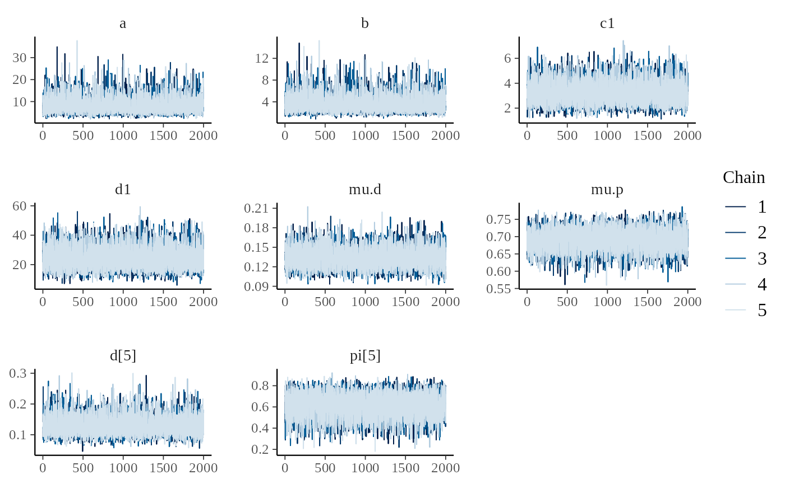
Analysis
dfw_hier <- extract_wider(hier_posterior_sample)We draw the posterior distribution for the model parameters:
dfw_hier %>%
select("a", "b", "c", "d", "mu_d", "mu_p") %>%
GGally::ggpairs(
columnLabels = c("a", "b", "c", "d", "mu[delta]", "mu[pi]"),
labeller = "label_parsed"
) +
theme_linedraw(base_size = 15L, base_line_size = 0) +
theme(axis.ticks = element_line(size = 15/22))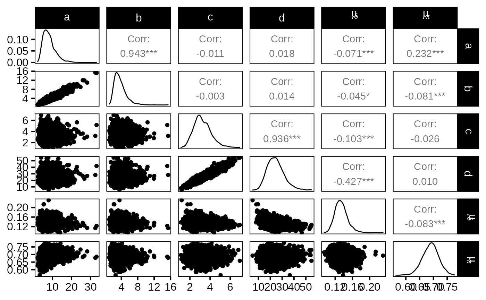
The expected efficiency of capture \(\mu_{\pi}\) lies around \(0.7\) and the \(\pi\)’s are dispersed among sites approximately like a \(Beta(7,3)\). We get a good posterior knowledge about the expected density: \(\mu_{\delta}\) is about \(13\) individuals per 100\(m^{2}\). In addition, one obtains a rather small standard deviation \(\sigma_{\delta}\) of fish densities among sites but, locally, the densities \(\delta_{i}\) ’s are generally not precisely estimated.
The hierarchical model borrows strength from neighbors. Consequently the problem of banana-shaped joint distribution between \(\pi\) and \(\delta\) is reduced when recourse is made to hierarchical modeling. As an example, when considered solely, site 5 and 10 exhibit poor determination of \(\pi\) and \(\delta\) as shown in the figures below. The data at site 5 or 10 alone are insufficient to opt for a large capture efficiency \(\pi\) associated a small population size or for a small capture efficiency with a high local population density \(\delta\). Under the hierarchical model though, sufficient transfer of information between sites helps specify the probable joint domain where \(\pi\) and \(\delta\) are to be expected.
p <- dfw_ind %>%
select(`pi.5`, `delta.5`) %>%
ggplot(aes(`delta.5`, `pi.5`)) +
geom_point(col = "red") +
geom_density_2d(col = "black") +
theme_bw(base_size = 15L, base_line_size = 0) +
ylim(c(0,1)) +
theme(legend.position="none")+
labs(x=expression(delta),
y=expression(pi),
title="Fish density vs Capture efficiency at site 5",
subtitle = "Independent model")
ggExtra::ggMarginal(p, type = "densigram", bins = 40)
#> Warning: Ignoring unknown parameters: bins
#> Ignoring unknown parameters: bins
#> Ignoring unknown parameters: bins
#> Ignoring unknown parameters: bins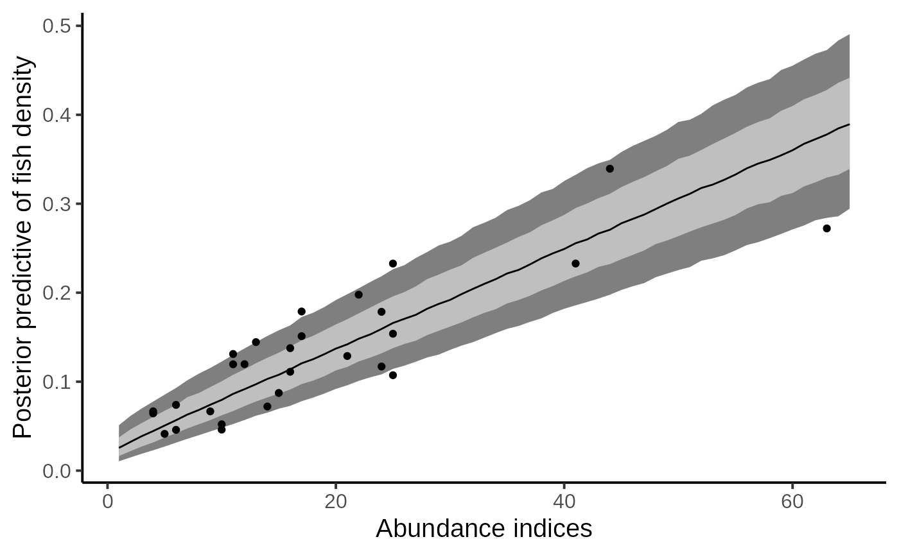
p <- dfw_ind %>%
select(`pi.10`, `delta.10`) %>%
ggplot(aes(`delta.10`, `pi.10`)) +
geom_point(col = "red") +
geom_density_2d(col = "black") +
theme_bw(base_size = 15L, base_line_size = 0) +
ylim(c(0,1)) +
theme(legend.position="none")+
labs(x=expression(delta),
y=expression(pi),
title="Fish density vs Capture efficiency at site 10",
subtitle = "Independent model")
ggExtra::ggMarginal(p, type = "densigram", bins = 40)
#> Warning: Ignoring unknown parameters: bins
#> Ignoring unknown parameters: bins
#> Ignoring unknown parameters: bins
#> Ignoring unknown parameters: bins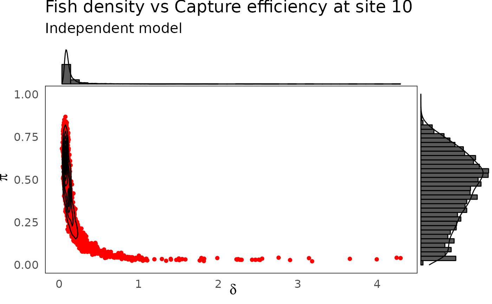
phier <- dfw_hier %>%
select(`pi.5`, `delta.5`) %>%
ggplot(aes(`delta.5`, `pi.5`)) +
geom_point(col = "red") +
geom_density_2d(col = "black") +
ylim(c(0,1)) + xlim(c(0,0.3)) +
theme_bw(base_size = 15L, base_line_size = 0) +
theme(legend.position="none")+
labs(x=expression(delta),
y=expression(pi),title="Fish density vs Capture efficiency at site 5",
subtitle = "Hierarchical model")
ggExtra::ggMarginal(phier, type = "densigram", bins = 40)
#> Warning: Ignoring unknown parameters: bins
#> Ignoring unknown parameters: bins
#> Ignoring unknown parameters: bins
#> Ignoring unknown parameters: bins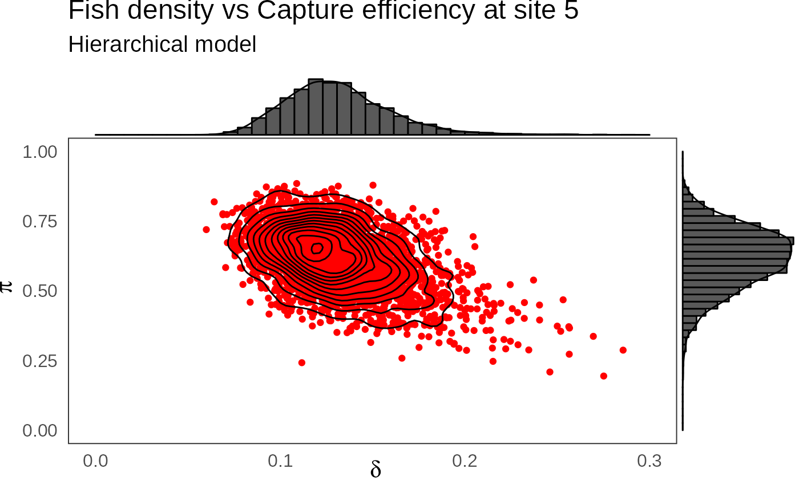
phier <- dfw_hier %>%
select(`pi.10`, `delta.10`) %>%
ggplot(aes(`delta.10`, `pi.10`)) +
geom_point(col = "red") +
geom_density_2d(col = "black") +
ylim(c(0,1)) + xlim(c(0,0.3)) +
theme_bw(base_size = 15L, base_line_size = 0) +
theme(legend.position="none")+
labs(x=expression(delta),
y=expression(pi),
title="Fish density vs Capture efficiency at site 10",
subtitle = "Hierarchical model")
ggExtra::ggMarginal(phier, type = "densigram", bins = 40)
#> Warning: Ignoring unknown parameters: bins
#> Ignoring unknown parameters: bins
#> Ignoring unknown parameters: bins
#> Ignoring unknown parameters: bins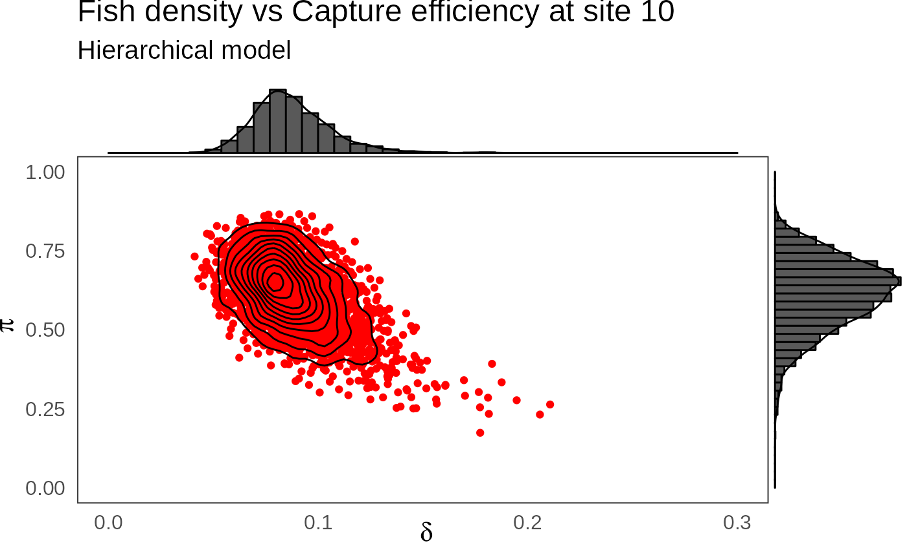
Combining successive removals and a rapid sampling technique
Removal sampling by electric fishing is time and manpower consuming, because it is difficult to store the removed fish and to go thrice in the field for a large number of sites. To increase the number of sites sampled with limited budget and diminishing human resources, recourse can be made to rapid electric fishing assessment techniques. A 5-mn sampling technique requires a single-timed sample for each site under a lighter protocol but only provides relative abundance measures. To be used for absolute population abundance estimation, abundance indices (\(AI\)) need ¨to be first calibrated with another method of population size estimation.
The \(AI\)’s performed on the \(33\) site of the dataset:
| Site | AI |
|---|---|
| 1 | 6 |
| 2 | 17 |
| 3 | 12 |
| 4 | 17 |
| 5 | 11 |
| 6 | 22 |
| 7 | 16 |
| 8 | 25 |
| 9 | 25 |
| 10 | 15 |
| 11 | 11 |
| 12 | 4 |
| 13 | 10 |
| 14 | 6 |
| 15 | 9 |
| 16 | 24 |
| 17 | 13 |
| 18 | 16 |
| 19 | 14 |
| 20 | 10 |
| 21 | 25 |
| 22 | 4 |
| 23 | NA |
| 24 | 24 |
| 25 | NA |
| 26 | 63 |
| 27 | NA |
| 28 | NA |
| 29 | 21 |
| 30 | 41 |
| 31 | 44 |
| 32 | NA |
| 33 | 5 |
To perform such a calibration in a consistent Bayesian framework, we need to model jointly successive removals and \(AI\)’s. There is a strong link between the observed abundance indices and the mean of the posterior pdf of \(\delta\) that we take as an estimate of the fish density from each site.
dfl_hier <- extract_longer(hier_posterior_sample) %>% mutate(Model = "Hierarchical")
df_delta_AI <- dfl_hier %>%
filter(str_detect(parameter, "^delta\\.")) %>%
rename("delta" = value) %>%
mutate(Site = as_factor(str_sub(parameter, 7))) %>%
group_by(Site) %>%
summarise(mean_delta = mean(delta)) %>%
mutate(abundance = SucRemNivelle$AI)
df_delta_AI %>%
ggplot(aes(x = abundance, y = mean_delta)) +
ylim(c(0, .4)) + xlim(c(0, 70)) +
geom_point() +
xlab("Abundance indices") +
ylab("Estimated fish density") +
theme_classic(base_size = 15L) +
labs(caption = "Posterior means of Salmon juvenile density (under hierarchical bayesian model) versus observed Abundance Indices.")
#> Warning: Removed 5 rows containing missing values (geom_point).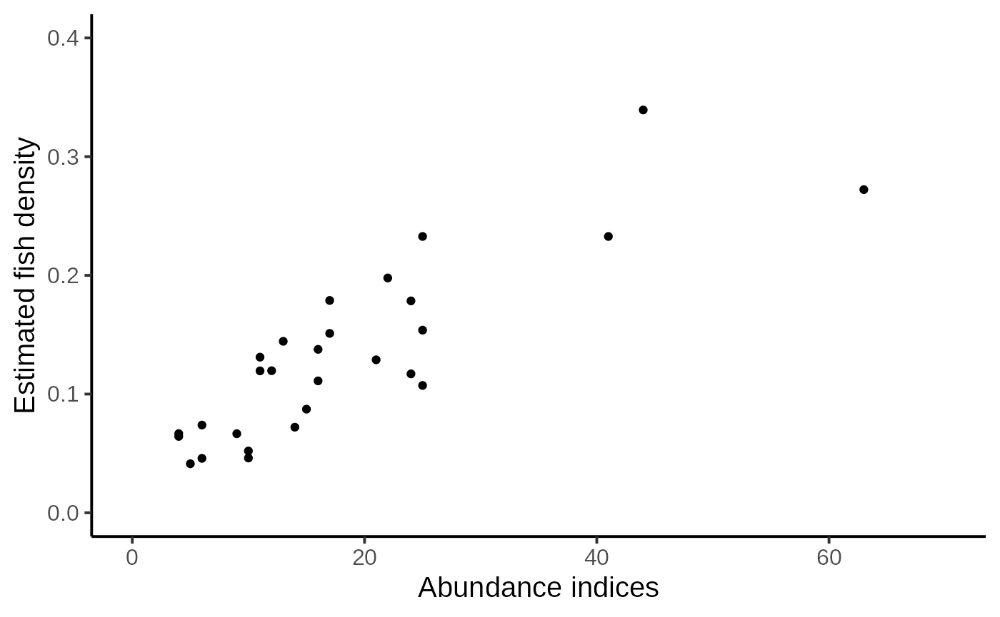
We can figure out a linear trend but with an increasing dispersion. Conversely to the homoscedastic behavior of the linear regression model, the variance should depend on the mean. Keeping these clues in mind, we relate the vector of Salmon juveniles’ density \(\delta_{i}\)’s to the vector of abundance indices \(AI_{i}\)’s as follows:
- As we are counting events, we hypothesize for each site \(i\), a Poisson distribution for AI around a mean value \(\mu_{AI}:\)
\[ AI_{i}~\sim~Poisson(\mu_{AI_{i}}) \]
- In turn, this true mean value \(\mu_{AI}\) will be drawn from a Gamma distribution.
\[ \mu_{AI_{i}} ~ \sim~ Gamma(\alpha_{AI_{i}},\beta_{AI_{i}}) \]
Such a choice can be hypothesized for two reasons:
- The convolution of a Poisson by a Gamma distribution makes a negative Binomial pdf, a common model for overdispersion in a counting experiment;
- By setting \(\beta_{AI_{i}}=f,\ \alpha_{AI{i}}=k\times f\times\delta_{i}\), one can describe a variance increasing (linearly) with the mean since:
\[ \left\{ \begin{aligned} & \mathbb{E}(\mu_{AI_{i}}) = \frac{\alpha_{AI_{i}}}{\beta_{AI_{i}}}% = k\delta_{i}\\ & \mathbb{V}(\mu_{AI_{i}}) = \frac{\alpha_{AI_{i}}}{\beta_{AI_{i}}^{2}}% = \frac{ \mathbb{E} (\mu_{AI_{i}}) }{f} \end{aligned} \right. \]
\end{enumerate}
The additional parameters \(k\) and \(f\) must be assigned a prior pdf. Parameter \(k\) is given a flat noninformative gamma prior: \[ k~\sim~Gamma(1,10^{-3}) \] It is convenient to work with \(\phi\) such that \(F=\frac{\phi}{1-\phi}\). \(\phi\) is the probability parameter from the Negative Binomial and we naturally opt for a uniform pdf: \[ \phi ~ \sim~Beta(1,1) \]

Directed Acyclic Graph of the hierarchical model for successive removals including abundance indices as an additional source of information for the 0+ juveniles density.
ai_model_str <- "model
{
# Priors
# ------
# Hyperprior for the trapping efficiency
mu_p ~ dbeta(1,1)
log_u_p ~ dunif(0,10)
u_p <- exp(log_u_p)
a <- mu_p * u_p
b <- (1-mu_p) * u_p
# Compute standard deviation of p
var_p <- mu_p*(1-mu_p)*(1/(u_p+1))
sd_p <- sqrt(var_p)
# Hyperpriror for the density
mu_d ~ dgamma(1,1)
sd_d ~ dgamma(1,0.001)
# Parameterization of the Gamma distribution
c <- pow(mu_d,2) / pow(sd_d,2)
d <- mu_d / pow(sd_d,2)
for (i in 1:I)
{
# Prior on capture efficiency
pi[i] ~ dbeta(a,b)
# Prior on fish density
delta[i] ~ dgamma(c,d)
# Number of fish (S[i] in the data set)
mu_nu[i] <- S[i] * delta[i]
nu[i] ~ dpois(mu_nu[i]) T(,500)
}
# Hyperpriors for the mean abundance index
k ~ dgamma(1, 0.001)
phi ~ dbeta(1, 1)
f <- phi/(1-phi)
# Priors for the Abundance index
for (i in 1:I) {
alpha_AI[i] <- k*f*delta[i]
mu_AI[i] ~ dgamma(alpha_AI[i], f)
}
# Likelihood
# ----------
for (i in 1:I) {
C1[i] ~ dbin(pi[i], nu[i])
nur1[i] <- nu[i] - C1[i]
C2[i] ~ dbin(pi[i], nur1[i])
nur2[i] <- nur1[i] - C2[i]
C3[i] ~ dbin(pi[i], nur2[i])
AI[i] ~ dpois(mu_AI[i])
}
# Predictive distribution of the density conditionnally upon
# observed abundance indices
for (i in 1:I_pred) {
AI_pred[i] ~ dpois(mu_AI_pred[i])
mu_AI_pred[i] ~ dgamma(alpha_AI_pred[i], f)
alpha_AI_pred[i] <- k * delta_pred[i] * f
delta_pred[i] ~ dgamma(c,d)
# Link with observed abundance indices
}
}
"
set.seed(123)
ai_model <- jags.model(file = textConnection(ai_model_str),
data =SucRemNivelle,#c(dataList$value, data_AI),
n.chains = 3)
#> Compiling model graph
#> Resolving undeclared variables
#> Allocating nodes
#> Graph information:
#> Observed stochastic nodes: 167
#> Unobserved stochastic nodes: 298
#> Total graph size: 717
#>
#> Initializing model
# Inferences
update(ai_model, n.iter = 10000)
ai_posterior_sample <- coda.samples(
ai_model,
variable.names = c("a", "b", "c", "d", "mu_d", "mu_p", "sd_d", "sd_p",
"pi", "delta", "nu", "phi", "k", "f", "mu_AI",
"delta_pred", "mu_AI_pred"),
n.iter = 10000,
thin = 10)
summarise_draws(as_draws_df(ai_posterior_sample),
default_convergence_measures()) %>%
filter(variable %in% c("a", "b", "c", "d",
"mu_d", "mu_p", "sigma_d", "sigma_p",
"phi", "k", "mu_AI")) %>%
knitr::kable()| variable | rhat | ess_bulk | ess_tail |
|---|---|---|---|
| a | 0.9998840 | 2029.4588 | 2781.9576 |
| b | 1.0002102 | 2294.4066 | 2829.9883 |
| c | 1.0042604 | 1116.3178 | 2283.0722 |
| d | 1.0094108 | 723.2803 | 1751.8044 |
| k | 1.0139487 | 448.7799 | 790.3346 |
| mu_d | 1.0113785 | 666.4471 | 1436.7747 |
| mu_p | 0.9993467 | 2560.4025 | 2899.8039 |
| phi | 1.0154339 | 335.2859 | 412.8917 |
mcmc_trace(ai_posterior_sample,
pars = c("delta[5]", "pi[5]",
"delta[10]", "pi[10]"))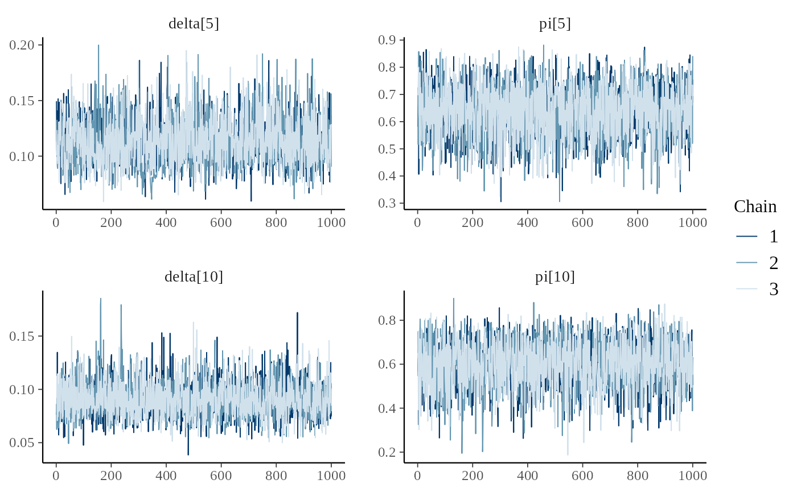
Results and analysis
dfw_ai <- extract_wider(ai_posterior_sample)
dfw_ai %>%
select("mu_d", "sd_d", "mu_p", "sd_p", "phi", "k") %>%
GGally::ggpairs(
columnLabels = c("mu[delta]", "sigma[delta]", "mu[pi]", "sigma[pi]", "phi", "k"),
labeller = "label_parsed",
lower = list(continuous = wrap("points", alpha = 0.3,size = .5))
) +
theme_linedraw(base_size = 15L, base_line_size = 0) +
theme(axis.ticks = element_line(size = 15/22)) +
labs(caption = "Posterior distributions of parameters for the full AI + successive removal model.")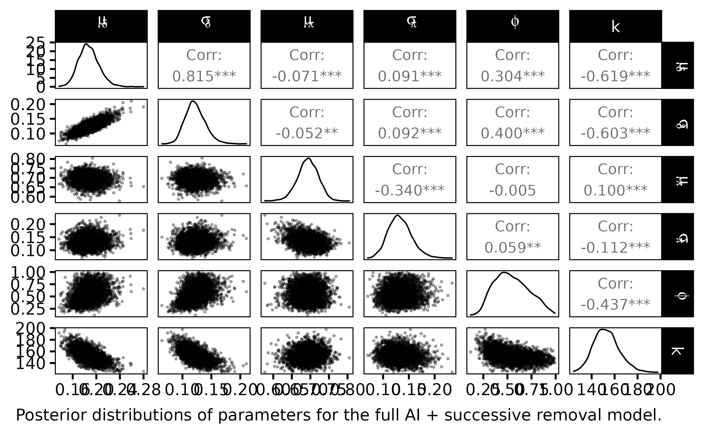
The statistical Bayesian learning machinery provides informative posterior distribution for \(\phi\) and \(k\):
- \(\phi\) is far from uniform, its posterior pdf varies around \(0.65\)
- \(k\) varies close to \(150\) with a small standard deviation
dfl_ind <- extract_longer(ind_posterior_sample) %>% mutate(Model = "Independent")
dfl_ai <- extract_longer(ai_posterior_sample) %>% mutate(Model = "Abundance Index")
bind_rows(dfl_hier, dfl_ind, dfl_ai) %>%
filter(str_detect(parameter, "^delta\\.")) %>%
rename("delta" = value) %>%
mutate(Site = as_factor(str_sub(parameter, 7))) %>% # 7 = length("delta.") + 1
ggplot() +
aes(x = Site, y = delta, fill = Model ) +
geom_boxplot(outlier.shape = NA, outlier.size = .25) +
scale_x_discrete(guide = guide_axis(angle = 90)) +
ylim(c(0,0.75)) +
scale_fill_manual(values = c("gray10", "gray50", "gray90")) +
ylab("Fish density") +
theme_classic(base_size = 15L) +
labs(caption = expression("Marginal posterior distributions of salmon densities delta for each site index."))
#> Warning: Removed 2188 rows containing non-finite values (stat_boxplot).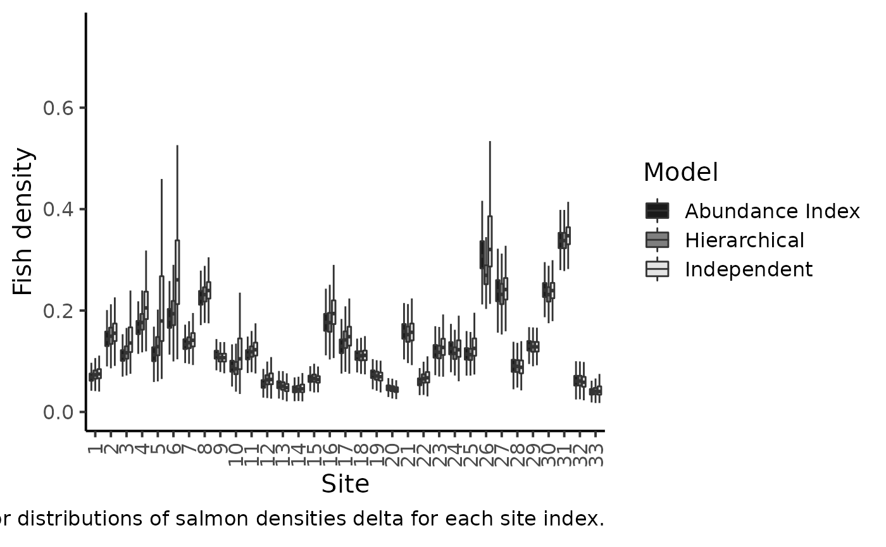
The figure makes clear the shrinkage effect due to hierarchical modeling: with the hierarchical model, the densities are less dispersed around the grand mean. Sharing information between sites allows for more precise estimations of the local fish densities. The black boxplotsdepict the posterior pdf of fish density \(\delta\) when modeling jointly the successive removals and the \(AI\)’s. When compared to the previous model without taking into account the information conveyed by the abundance index (grey boxplots), we see that there is only a small shrinkage effect: although the 50% credible intervals are generally narrower, i.e., we learn something from the \(AI\) sample but not that markedly. Site \(26\) bears a noticeable exception that can be explained by contradictory information brought by successive removals and by AI. If we were to trust the successive removal model only, the juvenile density for site \(26\) should be around \(0.3\) and, as \(k\) is close to \(140\), we should expect a value of \(150\times0.3=45\) individuals for the abundance index, but we actually observed \(63\) juveniles in the \(AI\) data!
dfl_ai %>%
filter(str_detect(parameter, "^delta_pred.")) %>%
mutate(AI = as.numeric(str_sub(parameter, 12))) %>%
rename("delta_pred" = value) %>%
group_by(AI) %>%
summarise(qs = quantile(delta_pred,
c(.1, .25, .5, .75, .9)),
prob = c(.025, .25, .5, .75, .975)) %>%
pivot_wider(names_from = prob, values_from = qs) %>%
ggplot(aes(x = AI, y = `0.5`)) +
geom_ribbon(aes(ymin = `0.025`, ymax = `0.975`), fill = "gray50") +
geom_ribbon(aes(ymin = `0.25`, ymax = `0.75`), fill = "gray75") +
geom_line() +
geom_point(data = df_delta_AI,
mapping = aes(x = abundance, y = mean_delta)) +
xlab("Abundance indices") +
ylab("Posterior predictive of fish density") +
theme_classic(base_size = 15L) +
labs(caption = "Predictive posterior distribution of Salmon juvenile density versus Abundance Indices (50% and 95% credible interval)")
#> `summarise()` has grouped output by 'AI'. You can override using the `.groups`
#> argument.
#> Warning: Removed 5 rows containing missing values (geom_point).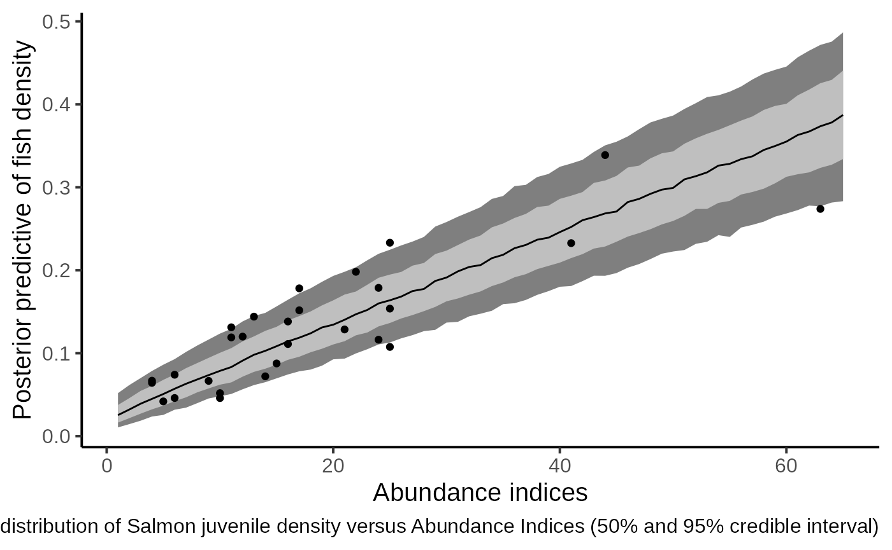
The figure shows that the index of abundance alone allows for differentiation between contrasting levels of fish density without recourse to the successive removal technique in the future. Yet fairly imprecise, this rapid sampling technique also provides the corresponding confidence bounds that match the cloud made by the posterior means of Salmon juvenile density (under the HBM model) and the Abundance Indices observed in the dataset.